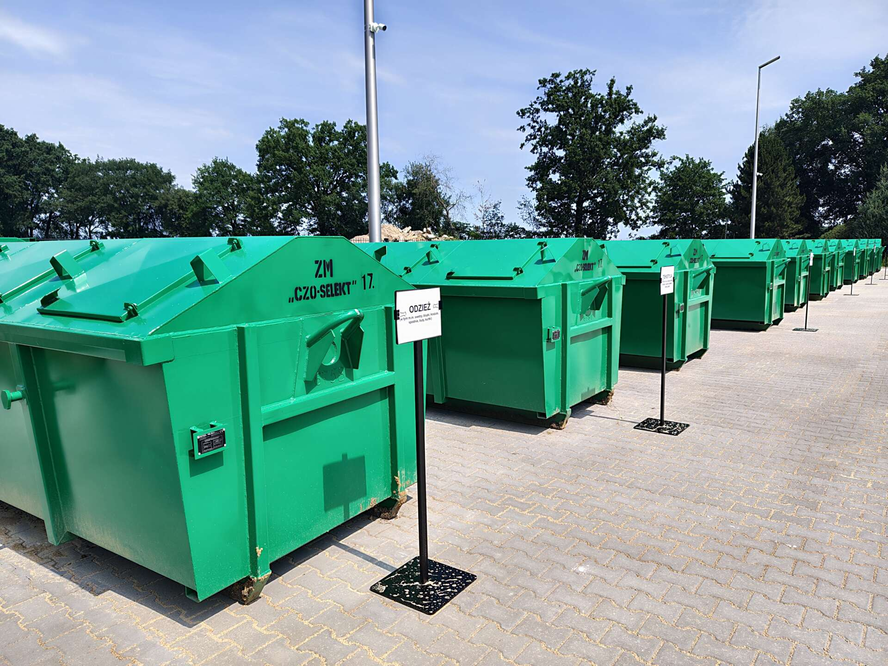

Problem wielkiego formatu i ukrytych toksyn
Wraz ze wzrostem naszej zamożności kupujemy coraz więcej, a co za tym idzie – generujemy gigantyczne ilości śmieci. O ile codzienna segregacja papieru czy plastiku weszła nam w nawyk, schody zaczynają się, gdy musimy wyrzucić wielkogabarytową kanapę, zużyte opony czy resztki chemii budowlanej. Niestety, wciąż mnóstwo tych kłopotliwych śmieci ląduje w zwykłych pojemnikach, co drastycznie zanieczyszcza dobre surowce, obniża krajowe poziomy recyklingu i stwarza realne zagrożenie dla ludzi pracujących przy sortowaniu.
Na szczęście infrastruktura w Polsce szybko się rozwija. Obecnie w kraju działa już ponad 2100 Punktów Selektywnego Zbierania Odpadów Komunalnych (w skrócie PSZOK). Tylko w ciągu jednego roku Polacy dostarczyli do nich ponad 500 tysięcy ton problematycznych śmieci, ratując je przed wylądowaniem na nielegalnych, dzikich wysypiskach. Skala rośnie, a mieszkańcy z roku na rok oddają tam coraz więcej odpadów, poprawiając jakość całego systemu.
Filtr bezpieczeństwa, czyli jak działa „miejska kopalnia”
Aby zrozumieć rolę PSZOK-u, wyobraź sobie system gospodarki odpadami jako ruchliwą autostradę. Zwykłe, codzienne śmieci z naszych domów to samochody osobowe, które gładko przemieszczają się swoimi pasami do odpowiednich fabryk (sortowni). Jednak zużyta pralka, akumulator czy kanapa to wielkie, niebezpieczne konwoje z ładunkami wybuchowymi. Wrzucenie ich do zwykłego, przydomowego kosza przypomina wpuszczenie pod prąd ciężarówki na autostradę – powoduje potężny „karambol”, zator na taśmach sortowniczych i zniszczenie czystych surowców.
PSZOK działa jak bezkolizyjny zjazd z tej autostrady prosto do „miejskiej kopalni”. To właśnie tam rozbraja się chemiczne bomby w postaci starych farb i świetlówek z rtęcią, zanim trafią one do naszej wody. To tam odzyskuje się drogocenne surowce, takie jak złoto, srebro, miedź czy aluminium, z rzuconych w kąt starych telefonów i komputerów, dzięki czemu nie musimy niszczyć środowiska budową nowych kopalni na świecie. Zamiast tworzyć zagrożenie, kłopotliwy odpad staje się cennym skarbem w Gospodarce Obiegu Zamkniętego.
💡 CZYM WŁAŚCIWIE JEST PSZOK I ILE KOSZTUJE?
Punkt Selektywnego Zbierania Odpadów Komunalnych (PSZOK) to obowiązkowe, odpowiednio wyposażone miejsce na terenie Twojej gminy, do którego możesz samodzielnie dostarczyć odpady problematyczne. Najważniejsza zasada: korzystanie z PSZOK-u jest darmowe! Opłata za to miejsce jest już wliczona w Twój comiesięczny rachunek za wywóz śmieci (tzw. opłatę śmieciową). System jest świadczeniem ekwiwalentnym – Ty przywozisz odpady, a gmina bezpłatnie je od Ciebie przejmuje i przetwarza.
Zostań domowym eko-detektywem. Co możesz zrobić już dziś?
Czyste rzeki i lasy zaczynają się w Twojej piwnicy. Odpowiednie zarządzanie domowymi rupieciami jest banalnie proste. Oto instrukcja, jak korzystać z udogodnień w Twojej okolicy:
- Zlokalizuj swój punkt: Wejdź na stronę internetową swojej gminy i wpisz hasło „PSZOK”. Znajdziesz tam dokładny adres oraz godziny otwarcia lokalnego punktu.
- Nie podrzucaj sąsiadom: Nigdy nie zostawiaj starych mebli, opon czy resztek z remontu pod wiatą osiedlową poza wyznaczonymi dniami zbiórki gabarytów. Załaduj je do bagażnika i zawieź na PSZOK – to w pełni darmowe.
- Wydobądź cenne elektrośmieci: Przejrzyj szuflady. Stare kable, telefony, zepsute myszki, baterie i akumulatory to prawdziwa kopalnia rzadkich metali. Zawieź je do punktu, by bezpiecznie wróciły do obiegu.
- Pamiętaj o nowym prawie – segreguj tekstylia: Od 1 stycznia 2025 roku weszły w życie nowe przepisy. Gminy mają obowiązek selektywnie zbierać starą odzież i tekstylia m.in. właśnie w PSZOK-ach. Dziurawe spodnie, których nie da się oddać fundacjom charytatywnym, czy zużyte, chemicznie zabrudzone szmaty robocze zawieź właśnie tam, by nie zanieczyszczały zwykłych pojemników.
- Zlewaj zużyty olej: Nie wylewaj oleju po smażeniu do kanalizacji. Jeśli w Twojej okolicy nie ma specjalnego olejomatu, zlej tłuszcz do szczelnej plastikowej butelki i bezpiecznie oddaj w PSZOK-u.

Twój ruch ma znaczenie!
Zmiana świata na czystszy i bardziej ekologiczny wcale nie musi być droga, bolesna czy skomplikowana. Rozwiązanie od lat czeka tuż za rogiem – w Twojej własnej gminie. Kiedy następnym razem będziesz robił wiosenne porządki, remontował pokój czy wymieniał sprzęt AGD na nowy, nie traktuj swojej piwnicy ani pobliskiego lasu jako darmowego magazynu. Wykorzystaj to, za co i tak co miesiąc płacisz! Pakuj problematyczne śmieci i kieruj się do najbliższego PSZOK-u. W ten prosty sposób uratujesz cenne surowce, ochronisz wodę i powietrze, a przede wszystkim udowodnisz, że jesteś świadomym obywatelem z klasą.